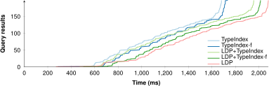

The Web is in control of tech giants
- Users are not in control of their personal information
- Vendor lock-in
- Censorship and influence of content
Solid aims to re-decentralize the Web
A Web-based decentralization ecosystem
Users are in full control over their own data
Built on open standards
Compatible with Web technologies

Solid is a collection of open standards
-
Aligned with Web standards
Back to the original concept of a decentralised Web
-
Not proprietary
Everyone can implement these standards
More competition → more innovation → better for users
-
Everyone can contribute
New versions of standards can be created
Solid is an ecosystem
-
Not a platform or application
Not meant as a replacement for others
-
A collection of open standards
To enable apps to be interoperable
-
Not owned by anyone
Individuals, companies, and organisations can use and build at Solid
Personal data pods
Full control of where your pod is stored and who can access it

Pods can store any kind of data
Personal data, photo's, friends, ...

Data become decoupled from apps


-
Today: data and app are tightly coupled
No choice over where and how data is stored, and who can access it
-
Solid: data and app are decoupled
Apps require read/write permissions from the user
A paradigm shift in app design
-
Storage of data is decentralised
Data is stored in the user's pod instead of in the app
-
Combining multiple data pods
Apps become views over one or more data pods
-
Explicit access control
Apps can only view or modify (parts of) your data after explicit approval
Users gain freedom to choose apps
-
Data can be managed with different apps
Because they are decoupled
-
Enables more innovation from app developers
Reuse existing data, and focus on user experience instead of data collection
SPARQL processing over centralized data
-
Dataset is collocated with query engine
All data is known beforehand
-
Single dataset
Combining multiple datasets is more difficult
How to query over decentralized data?

-
Data and query engine are not collocated
Query engine runs on a separate machine
-
Not just one datasets
Data is spread over the Web into multiple documents
Federated SPARQL querying?

-
❌ Sources are SPARQL endpoints
Solid pods offer no SPARQL endpoints
-
❌ Federation algorithms assume public data
Solid requires permissioning
-
❌ Federation algorithms have limited scalability
In Solid, data may be spread across millions of sources
Link Traversal Query Processing!

-
✅ Follow link across documents during query execution
Solid LDP uses Linked Data documents
-
✅ Document-level authorization
Solid requires permissioning
-
❓ Is link traversal fast enough
LTQP was designed for querying Linked Open Data
-
Introduced more than a decade ago
Hartig, O.: SPARQL for a Web of Linked Data: Semantics and computability
-
Web of Linked Open Data as a globally distributed dataspace
No prior indexing in a central location
-
Follow-your-nose principle
Discover data during query execution
-
No practical usage so far
Due to performance concerns (large number of links, non-termination)
Additional assumptions with Solid → potential for improved performance!
Exploiting structural properties of Solid
Non-complex queries can be answered in the order of seconds

Taelman, R. Link traversal query processing over decentralized environments with structural assumptions. ISWC 2023.
Inefficient query plans
-
Traditionally: number of links is bottleneck for link traversal
Due to structural properties of Solid pods, this is less of a problem
-
Query engines must use heuristics for query planning
No statistics available prior to query execution
Hartig, Olaf. "Zero-knowledge query planning for an iterator implementation of link traversal based query execution."
-
Need for adaptive query planning
Modify query plan during traversal
Discovery of cardinality estimates and indexes
Hybrid query execution

-
Solid pods are currently document-based
Collection of Linked Data documents
-
Pods could expose more expressive interfaces
SPARQL endpoints, TPF, SPF, ...
-
Need for query execution over heterogeneous sources
How to do this in an adaptive manner?
Query engine only discover this interface during query execution
Exploit structural information

-
Users can structure their pod in a certain way
Place all photos in directories based on country
-
Query engines may exploit this information
If pods expose this information
-
Relevant for query planning
Pruning of documents and prioritization
Reasoning at query time
-
Different pods/apps may use different vocabularies
Schema.org, FOAF, Wikidata, ...
-
Apps issue queries in a single vocabulary
Query engine should perform schema alignment
-
Reasoning over partial and streaming knowledge
How to do this efficiently?
Summarization across multiple pods
-
Data may be aggregated across multiple Solid pods
Usage within family context, work place, ...
-
Query engines can exploit these summaries
Query planning and source selection